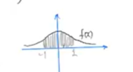
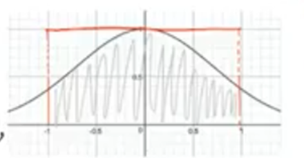
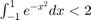
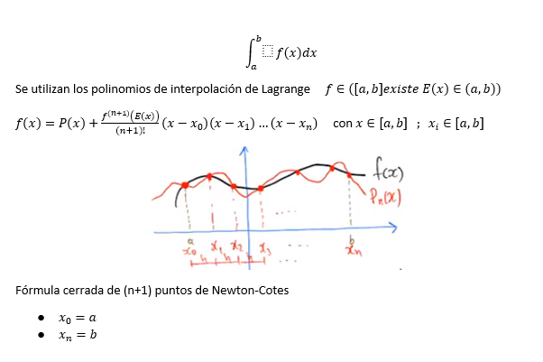
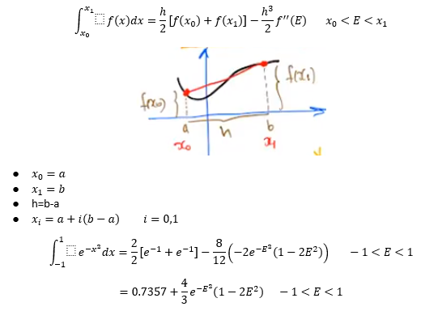
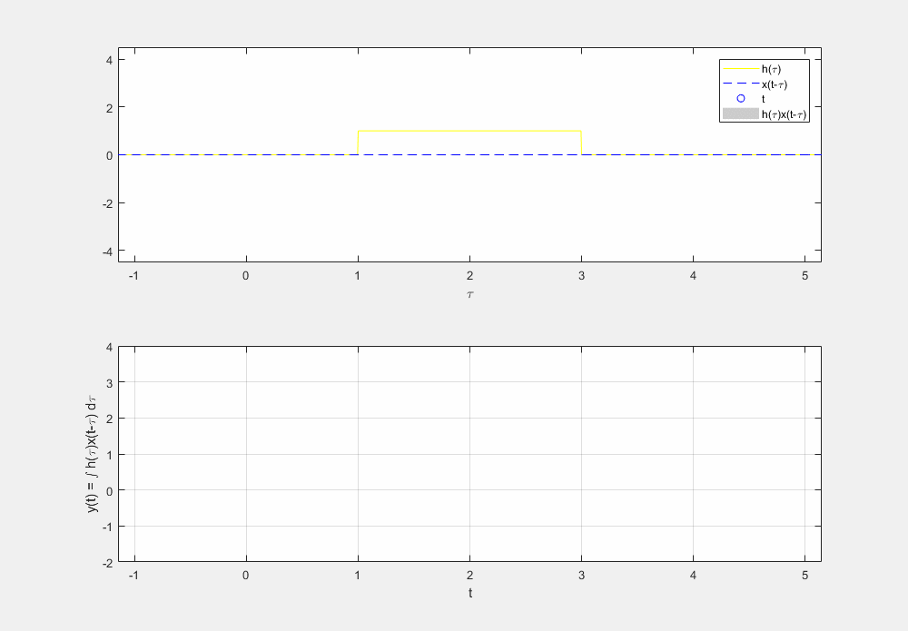
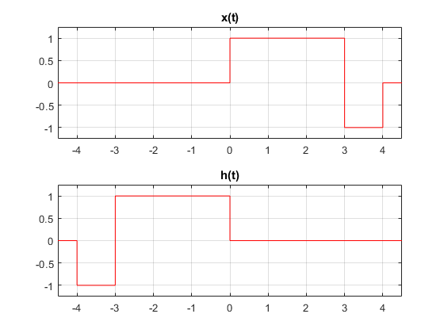

Práctica 4: Convolución y Correlación de señales en tiempo continuo
Integrantes
- Alvarez Garcia Elian Alexander
- Diego Vertiz Alexis
- Marquina Zendejas Victor
- Mendivil Herrera Jesus Alejandro
UPIITA IPN Señales y Sistemas Grupo: 2TV1
Contents
Objetivos
- Conocer métodos básicos de integración numérica
- Manipulación de instrucciones en MATLAB
- Simular convoluciones y correlaciones de señales continuas
Introduccion
- Teorema fundamental del cálculo
Asociamos a la función  a el área definida por la función grafica de la función f(a) Una recta (l1) definida por el punto ((a,0) (a,f(a)) es decir una línea recta que pasa por esos dos puntos. Una recta (l2) definida por el punto ((b,0) (b,f(b)) es decir una línea recta que pasa por esos dos puntos. Y una recta (l3) definida por el punto ((a,0) (b,0) es decir una línea recta que pasa por esos dos puntos. En términos geométricos tenemos lo siguiente:
a el área definida por la función grafica de la función f(a) Una recta (l1) definida por el punto ((a,0) (a,f(a)) es decir una línea recta que pasa por esos dos puntos. Una recta (l2) definida por el punto ((b,0) (b,f(b)) es decir una línea recta que pasa por esos dos puntos. Y una recta (l3) definida por el punto ((a,0) (b,0) es decir una línea recta que pasa por esos dos puntos. En términos geométricos tenemos lo siguiente:

Como se aprecia la función está definida de a hasta b, el número asociado seria la área dibujada en gris en este caso. Normalmente usamos el teorema fundamental del cálculo, el cual especifica que si f es integrable (la región esta bien definida) y (anti derivada) entonces resulta ser que el numero asociado a la idea geométrica se puede calcular como F(b)-F(a) lo cual seria igual a: Sin embargo, en ocasiones resulta difícil encontrar F y aquí es donde aplicaremos técnicas de integración como lo son: Cambio de variable, Integración por partes, Sustitución trigonométrica, etc. Ya que estas funcionan lo que hacen es encontrar la antidervida y teniéndola, prosigues a evaluar a una integral definida y haces una resta de funciones de anti derivada
Ejemplo:
Si yo quisiera encontrar f(x) con el teorema fundamental del cálculo compruebo que es una función continua es integrable en un intervalo. El problema es que al usar el teorema fundamental del cálculo, al evaluarla no existiría ya que:
Por lo tanto como quiero encontrar el área, quiero encontrar el área gris

Aproximaremos el área lo más cercano posible, construiremos un polinomio y se parezca de sentido que al evaluar el polinomio o la función original de casi la misma altura. Integración numérica es sustituir funciones por polinomios. Por ejemplo:

Una aproximación seria aproximar con un polinomio constante f(x)=1 (línea roja) El área que encierra el rectángulo tiene longitud 2 El área gris es menor que el área delimitada por el rectángulo rojo. Como primera aproximación doy entendido que la función es menor que dos ( el área del rectángulo rojo)
 Tomando en cuenta que se puede dividir la imagen en segmentos de 4 x 4 argumentas que el área es aproximadamente 1.4936 mediante cálculos de aproximación
- Fórmulas cerradas de Newton-Cotes

- Regla del trapecio (n=1)

- Regla de Simpson (n=2)

- Regla de tres octavos de Simpson (n=3)

- Regla del trapecio compuesta
- Regla compuesta de Simpson
Problema 1
Realiza la convolucion de las siguientes señales x(t) y h(t)
x = @(t) ((-t+1).*(t>=0 & t<1))+((t-1).*(t>=1 & t<2)); h = @(t) ((1).*(t>=0 & t<1)); y = @(t) (((-t.^2/2)+t).*(t>=0 & t<1))+(((t.^2)-(3*t)+(5/2)).*(t>=1 & t<2))+(((-t.^2/2)+(2*t)-(3/2)).*(t>=2 & t<3)); graficarsenal(x,h)
La convolucion es la siguiente
convconm(x,h) legend('R. Grafico')% Caja de Texto fplot(y,[-4.5,4.5],'--b','DisplayName','R. Analitico') hold off
El resultado analitico es:
Problema 2
Realiza la convolucion de las siguientes señales x(t) y h(t)
x = @(t) ((t).*(t>=0 & t<1))+((1).*(t>=1 & t<2)); h = @(t) 1.*(t>=1&t<3); y = @(t) ((t.^2/2)-t+(1/2)).*(t>=1&t<2)+((t-(3/2)).*(t>=2&t<3))+(((-t.^2/2)+(3*t)-3).*(t>=3&t<4))+((-t+5).*(t>=4&t<5)); graficarsenal(x,h)

La convolucion es la siguiente
convconm(x,h) legend('R. Grafico')% Caja de Texto fplot(y,[-4.5,5.1],'--b','DisplayName','R. Analitico') hold off
El resultado analitico es:
Problema 3
Realiza la autocorrelacion de 
En este caso tomamos h(t) como la funcion x(t)
x = @(t) ((1).*(t>=0 & t<3))+((-1).*(t>=3 & t<4)); h = @(t) ((1).*(t>=-3 & t<0))+((-1).*(t>=-4 & t<-3)); y = @(t) ((-t-4).*(t>=-4 & t<-3))+((t+2).*(t>=-3 & t<-1))+(((3*t)+4).*(t>=-1 & t<0))+(((-3*t)+4).*(t>=0 & t<1))+((-t+2)*(t>=1 & t<3))+((t-4).*(t>=3 & t<4)); graficarsenal(x,h)
La correlacion es la siguiente
convconm(x,h) legend('R. Grafico')% Caja de Texto fplot(y,[-4.5,4.5],'--b','DisplayName','R. Analitico') hold off
Warning: Function behaves unexpectedly on array inputs. To improve performance, properly vectorize your function to return an output with the same size and shape as the input arguments.
El resultado analitico es:

Problema 4
Realiza la correlacion de


x = @(t) ((1).*(t>=0 & t<2))+((-1).*(t>=2 & t<4)); h = @(t) ((1).*(t>=-3 & t<0))+((-1).*(t>=-4 & t<-3)); y = @(t) ((-t-4).*(t>=-4 & t<-3))+((t+2).*(t>=-3 & t<-2))+(((3*t)+6).*(t>=-2 & t<-1))+(((-t)+2).*(t>=-1 & t<0))+((-3*t+2).*(t>=0 & t<1))+((-t).*(t>=1 & t<2))+((t-4).*(t>=2 & t<4)) ; graficarsenal(x,h)
La correlacion es la siguiente
convconm(x,h) legend('R. Grafico')% Caja de Texto fplot(y,[-4.5,4.5],'--b','DisplayName','R. Analitico') hold off
El resultado analitico es: